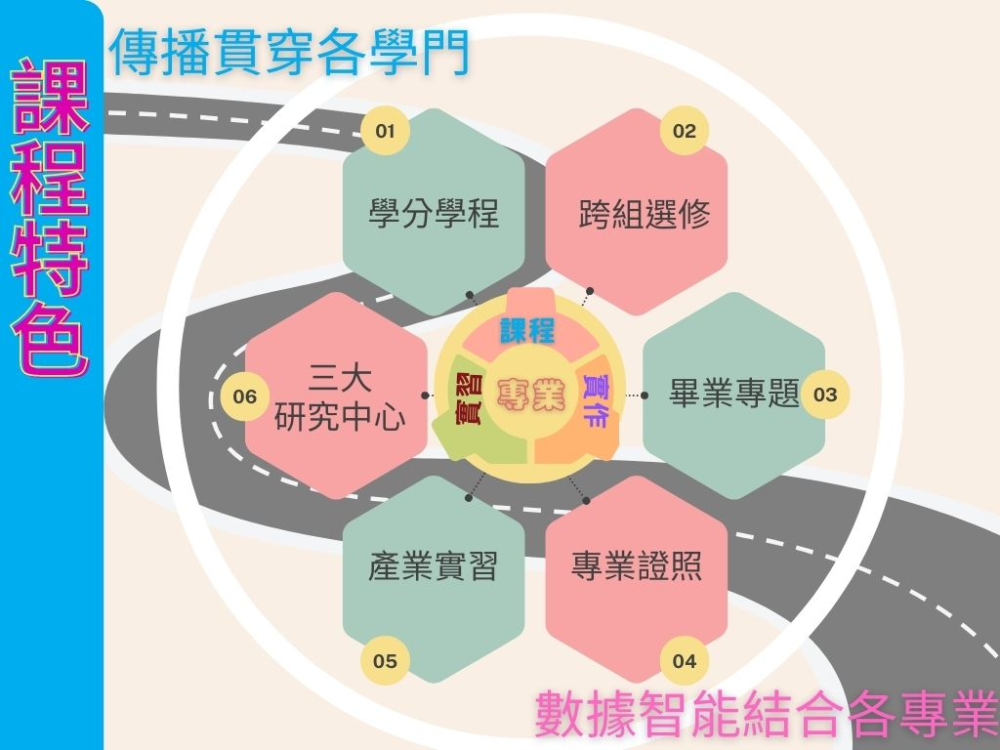
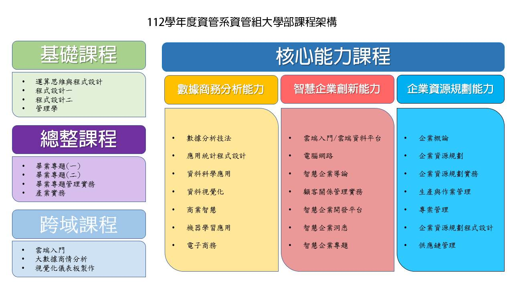
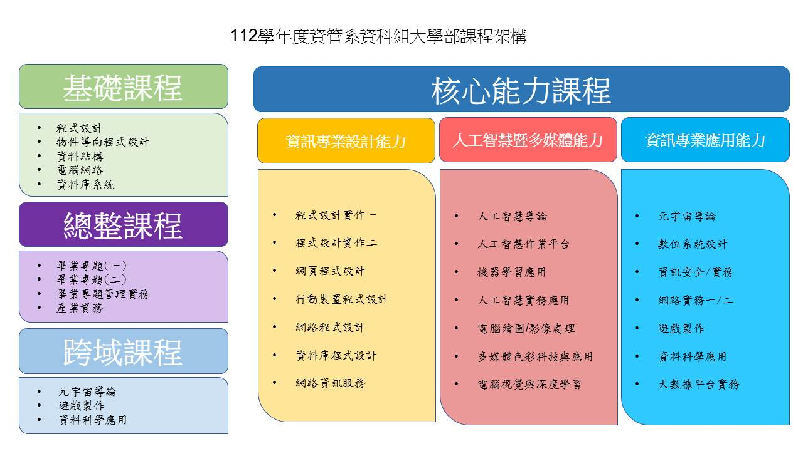
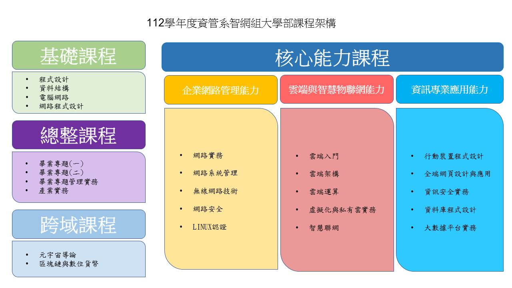
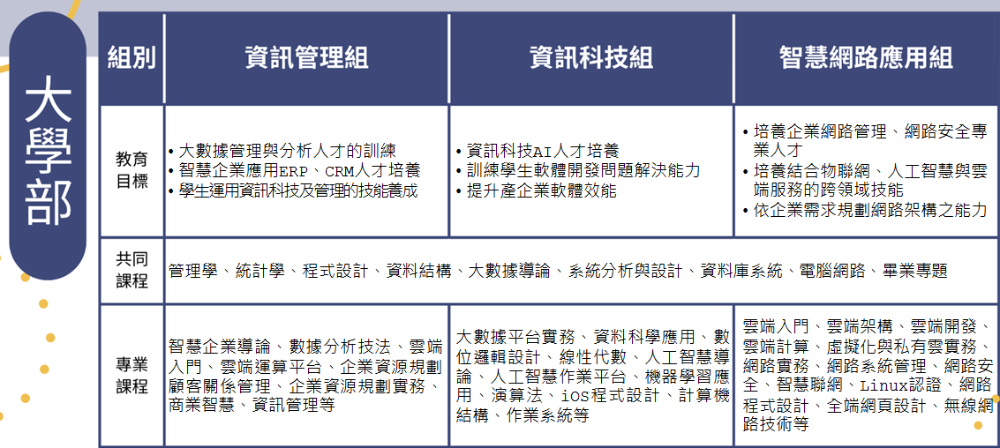

資訊管理系 - 課程特色與結構
課程特色
本系課程涵蓋了「資訊」與「管理」兩大領域，強調理論實務並重，重點科目包含程式設計、資訊軟體開發、企業資訊應用、企業經營管理、網路應用與資訊安全管理等相關課程。
為提升教學與研究的品質和深度，本系成立了多個研究中心，建置豐富的設備，力求教學與實務結合。並提供多方位的實習機會，讓同學畢業之前就能親身體會職場實務，了解本身優缺點，更珍惜學習機會。
本系重點課程「畢業專題實作」要求同學在畢業前組隊完成一個完整的系統作品，以培養實作能力。每年舉辦畢業展及晚會，吸引企業界及學術界先進參觀，頗受讚譽。參加國內競賽更屢獲大獎，除提高本系聲譽之外，並為同學畢業發展建立了良好的契機。

各組課程架構
資管組
世新資管系，融合了世新大學的傳播特色，著重以數據商務傳播與媒體科技應用等。在課程設計上，除了可和學校媒體科技結合外，有很多元的資訊領域可做探索和跨域學習，包含了人工智慧、大數據、雲端應用與證照、智慧物聯、區塊鏈、元宇宙、資訊安全等。
有近八成的課程都在電腦教室中進行，手把手的實作學習方式，紮實地培養同學畢業前，製作出資訊作品的能力。
資管組課程結構

資科組
資科組的課程包括程式設計、資訊安全、資料庫系統以及 APP開發 (Android/iOS) 等。當然也少不了當今最熱門的人工智慧等技術。資科組的進階課程，包括遊戲製作、大數據、電腦繪圖、影像處理、電腦視覺與深度學習等進階選修課程。同學可針對資訊領域進行多元探索與學習。
這些都是現今資訊產業非常熱門的領域，學習主要以實務技能和應用為主，可直接應用在實務工作中。
資科組課程結構

智網組
現今數位生活中，無論個人或企業都脫離不了網路與雲端服務，具備相關專長即是就業保證。世新大學資管系智慧網路組除開設有網路基礎課程，網路程式設計課程，專業證照課程外。並精心規劃智慧物聯網與雲端服務特色課程，如人工智慧導論、智慧聯網、網路安全、雲端架構、雲端運算等課程，培養具備扎實基礎能力與職場即戰力的次世代網路專業人才。
智慧網路組為同學規劃扎實的國際證照課程，如CISCO C C N A、R H C S A、Amazon雲端證照等。畢業學長姐，常擔任的工作有網路系統工程師，網路應用程式設計師、網路規劃與管理工程師、網路安全分析師、雲端工程師與雲端架構師。歷屆畢業生任職於國內資訊大廠及大型銀行，如鴻海、華碩、宏碁、緯創、中國信託銀行、彰化銀行、永豐銀行等。
智網組課程結構

